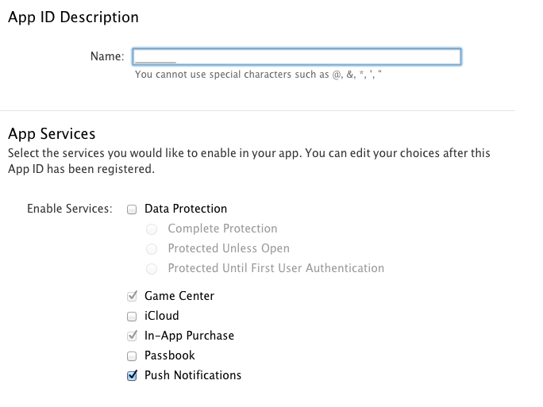
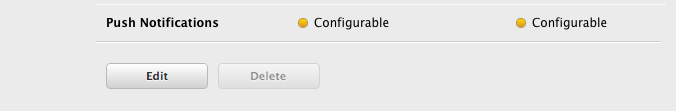
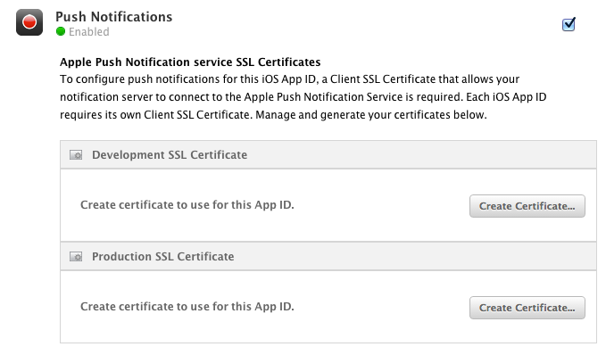
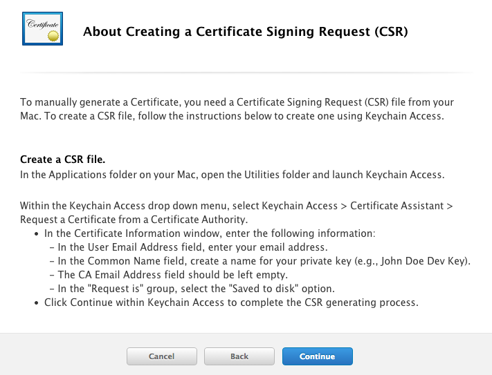
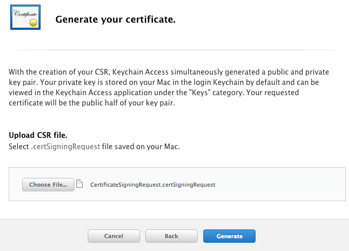
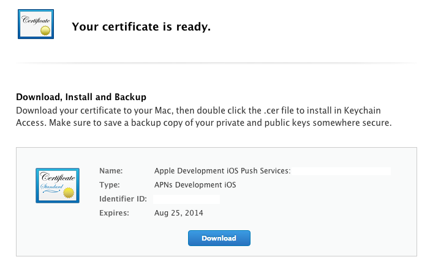
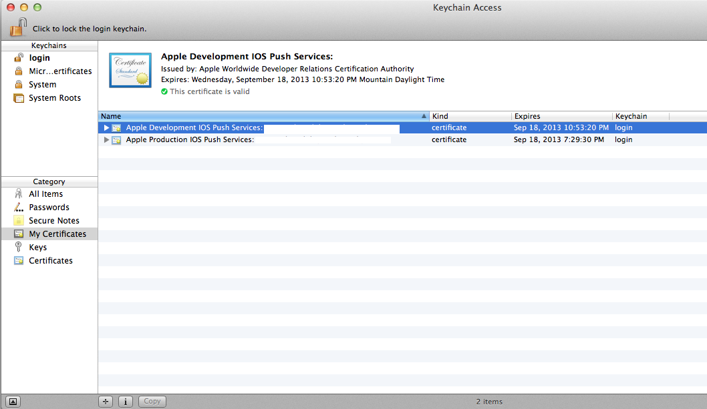
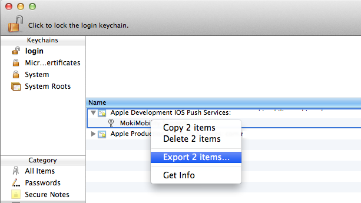
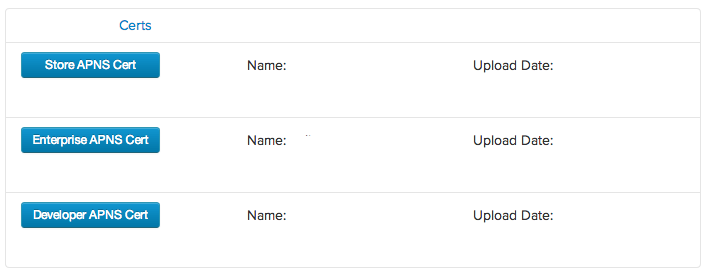

Before you can integrate your application with MokiManage, you need to go through the process of configuring it to receive push notifications from Apple (APNs). You must have an active iOS developer program membership in order to complete these steps.
The end result of this process are private SSL certificates that we store securely for you on MokiManage.com. These certificates allow us to send APNs messages to your application through the MokiManage platform on your behalf.

Inside of the Apple Developer Members Center, select Identifiers under the iOS Apps section and select your application from the list. If you have not previously created your application identifier, click the + button and complete the form. Make sure the Push Notifications checkbox is selected.

After you have selected your application identifier, you will see that there are two settings for push notifications that display yellow or green status icons.
Click the Edit button. If you are not able to select the Edit button, then you may not be the Team Agent or Account Admin. You have to be a Team Agent or Admin in order to configure APNs.
In order to enable Development or Product APNs on your application, you need to create the appropriate certificate. Click the Create Certificate button under the Development SSL section to begin that process.
You have to create a Certificate Signing Request (CSR) in order to create the APNs certificate. You create this CSR using Keychain Access on your Mac. Follow the instructions provided in the Developer Portal to create the CSR and click Continue.
Upload the CSR to the Developer Portal and click Generate
Download the certificate that is created and double click it to open in Keychain Access.
In Keychain Access, the certificate will be displayed in the My Certificates section with a label of Apple Development IOS Push Services: <app-identifier> (it will be labeled Apple Production IOS Push Services for production certs).
Once the certificate is installed, you need to export both the cert and the associated private key to a .p12 file. Expand the cert so that the private key is displayed and select both items. Right click and select "Export 2 items...". Save the .p12 file and provide a password when prompted.
In order for the MokiManage platform to utilize your APNs cert you have just created, it needs to be in .pem format. Open a Terminal window and navigate to the directory where you saved your .p12 file.
Convert your .p12 to a .pem using the following OpenSSL command (replace your_cert.p12 with the name of the your .p12 file and your_cert.pem with whatever you want to name your .pem file) and enter the password you selected when you exported the .p12:
openssl pkcs12 -in your_cert.p12 -out your_cert.pem -nodes -clcertsUpload the .pem file to the Developer APNS Cert item inside of the Developer Tools section of MokiManage.com
Repeat this same process for the production SSL cert and upload it to the Store APNS Cert item.